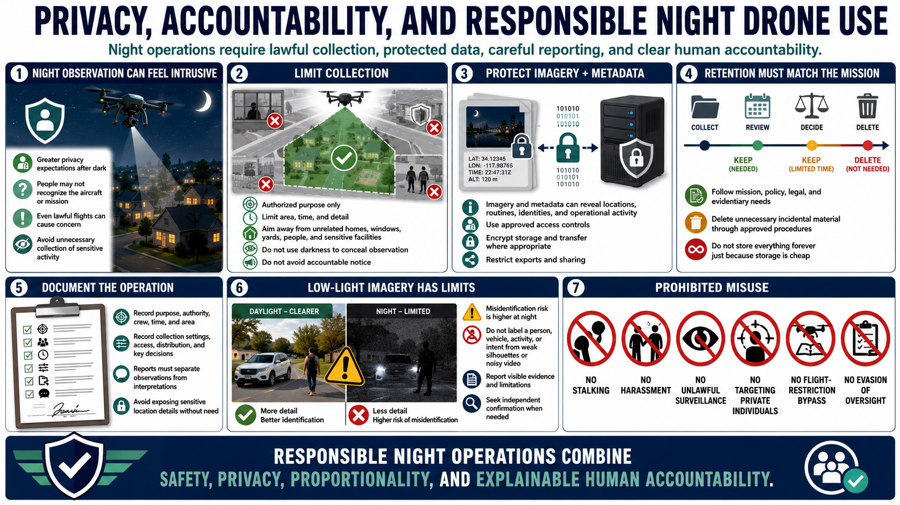

Privacy, Ethics, and Data Handling
Connecting to LMS... Progress: in progress

Narration
Night observation can feel more intrusive because people may reasonably expect greater privacy after dark and may not recognize the aircraft or mission. A lawful flight can still cause unnecessary concern or collect sensitive activity.
Limit collection to the authorized purpose, area, time, and detail. Aim sensors away from unrelated homes, windows, yards, people, and sensitive facilities where practical. Do not use darkness to conceal observation or avoid accountable notice.
Protect stored imagery and metadata because they may reveal locations, routines, access points, identities, or operational activity. Use approved access controls, encrypted storage and transfer where appropriate, and restricted exports.
Retention should match the mission, policy, legal requirements, and evidentiary need. Delete unnecessary incidental material through approved procedures. Avoid indefinite storage simply because data is inexpensive to keep.
Document purpose, authority, crew, time, area, collection settings, access, distribution, and significant decisions. Reports should distinguish direct observations from interpretations and avoid exposing sensitive location details without need.
Low-light imagery can also increase misidentification risk. Do not label a person, vehicle, activity, or intent from weak silhouettes or noisy video. Report the visible evidence, limitations, and need for independent confirmation.
Do not use night operations for stalking, harassment, unlawful surveillance, targeting private individuals, flight-restriction bypass, or evasion of oversight. Responsible practice combines safety, privacy, proportionality, and explainable human accountability.